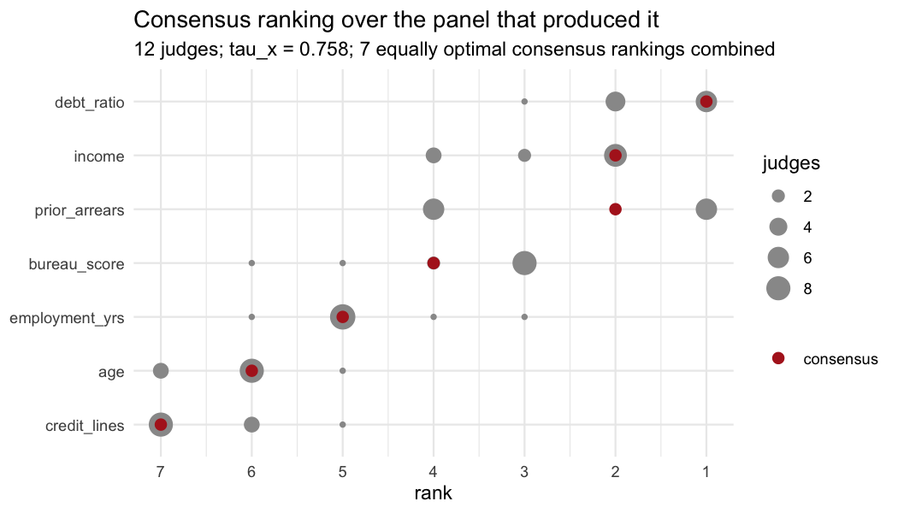
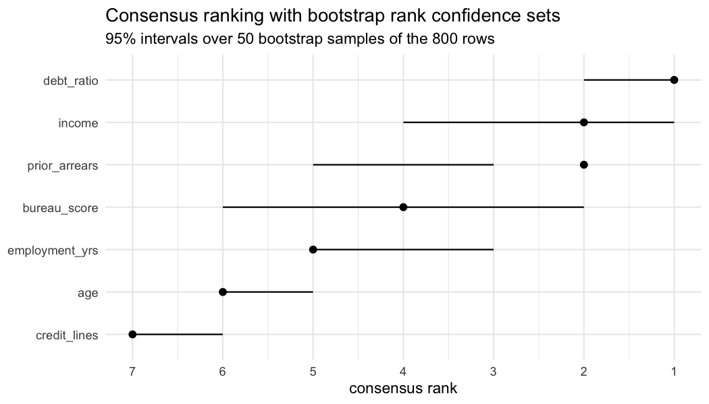

Consensus ranking of variable importance, with the uncertainty attached.
rankimp treats every combination of importance method, model, random seed and resample as a judge casting a ranking over the predictors. It computes the Kemeny median of that panel, keeps the ties the panel cannot break, and puts bootstrap confidence sets around the result so that a claim about which variables matter can be falsified rather than merely stated.
It builds on ConsRank for the consensus itself. The contribution is the inferential layer on top.
The problem
A variable importance ranking is an estimate. It comes from an estimator with variance, computed on one sample, under one definition of importance, and it is almost always reported as though it were a fact.
Three things move it, and they are separable.
The definition moves it. Mean decrease in impurity, permutation importance, LOCO and SHAP are not noisy measurements of one underlying quantity. They ask different questions, and on correlated predictors they have different right answers. Permutation importance on a fitted model asks what that model would lose. LOCO asks what a model built without the variable would lose. Those diverge by construction.
The estimator moves it. Refit the same forest under a different seed and the ordering changes, because the ensemble is random.
The sample moves it. Refit on another draw from the same population and the ordering changes again. This is the one a reader cares about when they ask whether the finding is real.
Reporting a single ranking from a single method on a single fit collapses all three into one number and prints it with no error bar.
What the package does instead
Every source of importance becomes a judge, the panel is aggregated into a Kemeny median, and the median is bootstrapped. The whole package is one line of work, and each stage is usable on its own.
importance scores importance_permutation() importance_mdi()
| importance_loco() importance_shap()
v
rankings importance_to_rank()
|
v
a panel importance_judges() <- builds all of the above
|
+--> weights judge_weights()
v
a consensus consensus_rank()
|
+--> per judge item_consensus()
+--> subgroups judge_clusters()
v
uncertainty rank_confsets()
|
+--> probability prob_topk()
+--> a decision rank_select()If you already have a matrix of rankings from somewhere else, start at consensus_rank() and ignore the top half.
Installation
Not on CRAN yet. Install from GitHub:
# install.packages("pak")
pak::pak("agostinognasso/rankimp")A worked example, end to end
The whole package on one problem, on the data the package ships, with the truth known in advance so that every answer can be checked against it rather than argued over.
The data, and what is true in it
applications is 800 synthetic loan applications. Every predictor enters the outcome with a known coefficient on the standardised scale, so a coefficient and an effect are the same number, and the ordering a ranking ought to recover is stored on the data frame itself.
library(rankimp)
truth <- sort(attr(applications, "effects"), decreasing = TRUE)
truth
#> prior_arrears debt_ratio bureau_score income employment_yrs
#> 0.90 0.78 0.62 0.45 0.22
#> credit_lines age
#> 0.00 0.00Seven predictors. Five drive the outcome and two enter it nowhere, so age and credit_lines have no true ordering at all and anything that orders them is reporting noise. Two more features were built in on purpose, because a dataset on which every importance measure agrees would say nothing about a package for reconciling them. income and bureau_score come from one latent creditworthiness and correlate at 0.84, so they stand in for each other and the credit for the signal has to be divided somehow. prior_arrears is the largest effect in the data and takes only six distinct values, which is the case mean decrease in impurity handles badly. See ?applications.
library(randomForest)
#> randomForest 4.7-1.2
#> Type rfNews() to see new features/changes/bug fixes.
set.seed(1)
fit <- randomForest(default ~ ., data = applications, ntree = 300)
set.seed(2)
folds <- rsample::vfold_cv(applications, v = 3)One ranking, and no error bar
This is the standard report: fit a model, ask it once, print what it said.
set.seed(1)
round(importance_permutation(fit, applications, "default", n_perm = 5), 3)
#> income bureau_score debt_ratio employment_yrs prior_arrears
#> 0.097 0.075 0.124 0.065 0.130
#> credit_lines age
#> 0.014 0.034
round(importance_mdi(fit), 1)
#> income bureau_score debt_ratio employment_yrs prior_arrears
#> 52.5 46.8 58.3 36.2 39.8
#> credit_lines age
#> 18.9 31.3Read those against truth. Permutation gets the ordering almost right, missing only by swapping the correlated pair. Impurity puts prior_arrears fourth when it is the largest effect in the data, which is the low-cardinality bias doing exactly what it is known to do. Both invent an ordering for age and credit_lines, which have none, and nothing in either output says which part of it is which.
Why ranks and not scores
The two vectors above are not on a common scale, and no rescaling puts them on one, because they answer different questions. A permutation loss of 0.130 and an impurity decrease of 58.3 cannot be averaged.
Ranks are the coarsest thing every method can be made to agree to produce. importance_to_rank() converts scores to ranks, and gives equal scores equal ranks instead of separating them by column order.
scores <- rbind(
permutation = { set.seed(1); importance_permutation(fit, applications, "default", n_perm = 5) },
mdi = importance_mdi(fit)
)
importance_to_rank(scores)
#> income bureau_score debt_ratio employment_yrs prior_arrears
#> permutation 3 4 2 5 1
#> mdi 2 3 1 5 4
#> credit_lines age
#> permutation 7 6
#> mdi 7 6The price of working in ranks is that a disagreement living entirely in the magnitudes becomes invisible. The panel keeps the scores as well, in attr(J, "scores"), and vignette("method-disagreement") works through a case where two methods differ by a factor of six in the scores and produce the same ordering.
A panel instead of a ranking
importance_judges() builds the panel. It runs the requested backends over every combination of four axes, methods, models, seeds and resamples, and returns a judges object: an integer matrix with one row per judge, plus the provenance and the raw scores.
J <- importance_judges(
fit,
methods = c("permutation", "mdi"),
data = applications,
target = "default",
seeds = 1:2,
n_perm = 5,
resamples = folds
)
J
#> <judges> 12 judges x 7 variables
#> models : model1
#> methods : permutation, mdi
#> seeds : 1, 2
#> resamples: Fold1, Fold2, Fold3
#> weights : none (equal)
#> recipe : kept; rank_confsets(type = "data") can rebuild this panel
#>
#> income bureau_score debt_ratio employment_yrs
#> model1:permutation:s1:Fold1 3 4 2 5
#> model1:mdi:s1:Fold1 2 3 1 5
#> model1:permutation:s1:Fold2 2 4 3 5
#> model1:mdi:s1:Fold2 2 3 1 5
#> model1:permutation:s1:Fold3 4 6 2 3
#> model1:mdi:s1:Fold3 2 3 1 5
#> model1:permutation:s2:Fold1 4 3 2 6
#> model1:mdi:s2:Fold1 2 3 1 5
#> model1:permutation:s2:Fold2 3 5 2 4
#> model1:mdi:s2:Fold2 2 3 1 5
#> prior_arrears credit_lines age
#> model1:permutation:s1:Fold1 1 6 7
#> model1:mdi:s1:Fold1 4 7 6
#> model1:permutation:s1:Fold2 1 6 7
#> model1:mdi:s1:Fold2 4 7 6
#> model1:permutation:s1:Fold3 1 7 5
#> model1:mdi:s1:Fold3 4 7 6
#> model1:permutation:s2:Fold1 1 5 6
#> model1:mdi:s2:Fold1 4 7 6
#> model1:permutation:s2:Fold2 1 6 7
#> model1:mdi:s2:Fold2 4 7 6
#> ... and 2 more judgesTwo methods, two seeds and three folds is twelve judges, and they produce seven distinct rankings between them. The split is not even: all six impurity judges return the same ranking, and no two permutation judges return the same one. Impurity importance is a deterministic function of the fitted forest and barely moves across folds; permutation importance is itself a random estimator, and five shuffles on this data are not enough to pin down the middle of the table. Nothing is misconfigured. That is the size of the noise, and a single run of either would have hidden it.
Every axis multiplies. seeds measures the ensemble’s own noise, fit_list takes several fitted models when you want a consensus that holds across learners, and resamples takes an rset from rsample, refitting on each analysis set and scoring on the assessment set, so that the judges are out of sample.
Provenance is kept, one row per judge:
attr(J, "provenance")
#> # A tibble: 12 × 6
#> judge model engine method seed resample
#> <chr> <chr> <chr> <chr> <int> <chr>
#> 1 model1:permutation:s1:Fold1 model1 randomForest permutation 1 Fold1
#> 2 model1:mdi:s1:Fold1 model1 randomForest mdi 1 Fold1
#> 3 model1:permutation:s1:Fold2 model1 randomForest permutation 1 Fold2
#> 4 model1:mdi:s1:Fold2 model1 randomForest mdi 1 Fold2
#> 5 model1:permutation:s1:Fold3 model1 randomForest permutation 1 Fold3
#> 6 model1:mdi:s1:Fold3 model1 randomForest mdi 1 Fold3
#> 7 model1:permutation:s2:Fold1 model1 randomForest permutation 2 Fold1
#> 8 model1:mdi:s2:Fold1 model1 randomForest mdi 2 Fold1
#> 9 model1:permutation:s2:Fold2 model1 randomForest permutation 2 Fold2
#> 10 model1:mdi:s2:Fold2 model1 randomForest mdi 2 Fold2
#> 11 model1:permutation:s2:Fold3 model1 randomForest permutation 2 Fold3
#> 12 model1:mdi:s2:Fold3 model1 randomForest mdi 2 Fold3The consensus
consensus_rank() returns the ranking with the smallest total Kemeny-Snell distance to all the judges.
cr <- consensus_rank(J)
cr
#> <consensus_rank>
#> judges : 12
#> variables : 7
#> algorithm : BB (ties allowed)
#> tau_x : 0.7579
#> note : 7 equally optimal consensus rankings; combined, so variables they order differently are tied
#>
#> # A tibble: 7 × 2
#> variable rank
#> <chr> <int>
#> 1 debt_ratio 1
#> 2 income 2
#> 3 prior_arrears 2
#> 4 bureau_score 4
#> 5 employment_yrs 5
#> 6 age 6
#> 7 credit_lines 7income and prior_arrears come back tied at 2. That tie is not a rounding artefact, it is the Kemeny median declining to order the pair the panel argues about most: seven rankings attain the same minimum, and they place prior_arrears anywhere from first to fourth.
cr$consensus_all
#> income bureau_score debt_ratio employment_yrs prior_arrears credit_lines
#> [1,] 2 3 1 5 4 7
#> [2,] 2 3 1 4 3 6
#> [3,] 2 4 1 5 3 7
#> [4,] 2 3 1 4 2 6
#> [5,] 3 4 1 5 2 7
#> [6,] 2 3 1 4 1 6
#> [7,] 3 4 2 5 1 7
#> age
#> [1,] 6
#> [2,] 5
#> [3,] 6
#> [4,] 5
#> [5,] 6
#> [6,] 5
#> [7,] 6Reporting the first of those seven would not be neutral, because which one comes first depends on the order of your columns. The package averages each variable’s position over the whole optimal set and re-ranks with ties, and keeps the full set available.
Against truth the consensus is wrong at the top, and worth being precise about: prior_arrears is the largest effect in the data and the consensus cannot separate it from income, which is fourth. It gets the rest right, including both variables that do nothing.
tau_x is the mean Emond-Mason agreement between the consensus and the judges. Read it as how much agreement there was to summarise. It is not a p-value and not a goodness of fit.
library(ggplot2)
#>
#> Caricamento pacchetto: 'ggplot2'
#> Il seguente oggetto è mascherato da 'package:randomForest':
#>
#> margin
autoplot(cr)
The grey points are every rank the judges actually gave, with point area showing how many judges sat there. The spread is per variable, which is what tau_x cannot tell you: debt_ratio and the two null variables are nearly unanimous, and prior_arrears is spread across four ranks.
Who disagrees, and by how much
item_consensus() scores each judge against the reported consensus, worst first.
item_consensus(cr)
#> # A tibble: 12 × 3
#> judge weight tau_x
#> <chr> <dbl> <dbl>
#> 1 model1:permutation:s2:Fold1 1 0.524
#> 2 model1:permutation:s1:Fold3 1 0.571
#> 3 model1:permutation:s1:Fold2 1 0.667
#> 4 model1:permutation:s2:Fold2 1 0.667
#> 5 model1:permutation:s1:Fold1 1 0.762
#> 6 model1:permutation:s2:Fold3 1 0.762
#> 7 model1:mdi:s1:Fold1 1 0.857
#> 8 model1:mdi:s1:Fold2 1 0.857
#> 9 model1:mdi:s1:Fold3 1 0.857
#> 10 model1:mdi:s2:Fold1 1 0.857
#> 11 model1:mdi:s2:Fold2 1 0.857
#> 12 model1:mdi:s2:Fold3 1 0.857judge_weights() turns that into votes. by = "method" lets you hand impurity half a vote because you do not trust it here; by = "reliability" gives each judge a weight that grows with its agreement with the rest of the panel.
round(judge_weights(J, by = "reliability"), 3)
#> model1:permutation:s1:Fold1 model1:mdi:s1:Fold1
#> 1.019 1.040
#> model1:permutation:s1:Fold2 model1:mdi:s1:Fold2
#> 0.968 1.040
#> model1:permutation:s1:Fold3 model1:mdi:s1:Fold3
#> 0.895 1.040
#> model1:permutation:s2:Fold1 model1:mdi:s2:Fold1
#> 0.900 1.040
#> model1:permutation:s2:Fold2 model1:mdi:s2:Fold2
#> 0.978 1.040
#> model1:permutation:s2:Fold3 model1:mdi:s2:Fold3
#> 0.999 1.040Look at which judges reliability weighting rewards. Every impurity judge gets 1.040 and every permutation judge gets less, because the impurity judges agree with each other perfectly and agreement with the panel is what the weight measures. So the weighting would amplify the six judges carrying the cardinality bias and quieten the six that do not, and it would do it while looking like a principled correction.
That is the warning worth taking from this section rather than the syntax. It makes a lone dissenter quieter, and here the dissenters are the ones that are right.
One panel, or two panels stuck together
When agreement is low, the question is whether the disagreement is spread evenly or whether the panel has a seam in it. judge_clusters() looks for the seam by k-medians in Kemeny-Snell space, where each group’s centre is the Kemeny median of its own members and is therefore a ranking you can report.
het <- judge_clusters(J)
het
#> <judge_clusters>
#> judges : 12
#> variables : 7
#> clusters : 2 (silhouette 0.696, p = 0.005 against one population)
#> start : enumerated medoids
#>
#> # A tibble: 12 × 3
#> judge cluster silhouette
#> <chr> <int> <dbl>
#> 1 model1:permutation:s1:Fold1 1 0.475
#> 2 model1:permutation:s1:Fold2 1 0.42
#> 3 model1:permutation:s1:Fold3 1 0.25
#> 4 model1:permutation:s2:Fold1 1 0.431
#> 5 model1:permutation:s2:Fold2 1 0.5
#> 6 model1:permutation:s2:Fold3 1 0.275
#> 7 model1:mdi:s1:Fold1 2 1
#> 8 model1:mdi:s1:Fold2 2 1
#> 9 model1:mdi:s1:Fold3 2 1
#> 10 model1:mdi:s2:Fold1 2 1
#> 11 model1:mdi:s2:Fold2 2 1
#> 12 model1:mdi:s2:Fold3 2 1
#>
#> Group consensus:
#> income bureau_score debt_ratio employment_yrs prior_arrears
#> cluster_1 3 4 2 5 1
#> cluster_2 2 3 1 5 4
#> credit_lines age
#> cluster_1 6 7
#> cluster_2 7 6The seam falls exactly along the method axis, and the test rejects a single population at p = 0.005. It is worth checking that it is the method and not something else, since the panel has three axes in it:
provenance <- attr(J, "provenance")
table(method = provenance$method, cluster = het$cluster)
#> cluster
#> method 1 2
#> mdi 0 6
#> permutation 6 0
table(fold = provenance$resample, cluster = het$cluster)
#> cluster
#> fold 1 2
#> Fold1 2 2
#> Fold2 2 2
#> Fold3 2 2Six and six on the method, two and two on every fold. Reading the two group consensuses is what makes the finding usable: permutation puts prior_arrears first, where the truth puts it, and impurity puts it fourth. The panel divides, and unlike the tie in the consensus this division is not about a detail. It is about the largest effect in the data.
The hard part of this function is not finding groups, it is refusing to find them. Silhouette width on its own splits a homogeneous panel of six judges 62% of the time, because judges that rank alike sit at distance zero and score a perfect silhouette. So the observed panel’s best division in two is compared against reference panels drawn from a single population, and k comes back as 1 unless that comparison rejects.
How much of this survives another sample
rank_confsets() puts an interval around each variable’s rank. There are two bootstraps and they answer different questions.
type = "judges" resamples the panel. It measures how much the consensus depends on which sources of importance happened to be in it, and it refits nothing, so it is cheap.
set.seed(7)
rank_confsets(cr, n_boot = 500)
#> <rank_confsets>
#> replicates : 500 ( quick )
#> level : 0.95
#> resampled : 12 judges, with replacement
#>
#> # A tibble: 7 × 4
#> variable rank lower upper
#> <chr> <int> <int> <int>
#> 1 debt_ratio 1 1 2
#> 2 income 2 2 3
#> 3 prior_arrears 2 1 4
#> 4 bureau_score 4 3 4
#> 5 employment_yrs 5 5 5
#> 6 age 6 6 7
#> 7 credit_lines 7 6 7type = "data" resamples the rows, refits every model and rebuilds the whole panel, once per replicate. It measures whether the ordering would survive another dataset, which is usually the question a reader actually has. It needs a panel built by importance_judges(), because it needs the recipe to rebuild.
set.seed(7)
cb <- rank_confsets(cr, type = "data")
cb
#> <rank_confsets>
#> replicates : 50 ( quick )
#> level : 0.95
#> resampled : 800 rows, with replacement; the panel is rebuilt on each
#>
#> # A tibble: 7 × 4
#> variable rank lower upper
#> <chr> <int> <int> <int>
#> 1 debt_ratio 1 1 2
#> 2 income 2 1 4
#> 3 prior_arrears 2 3 5
#> 4 bureau_score 4 2 6
#> 5 employment_yrs 5 3 5
#> 6 age 6 5 6
#> 7 credit_lines 7 6 7The two disagree, and the disagreement is the lesson. Resampling the judges puts prior_arrears in [1, 4] and pins employment_yrs to exactly 5. Resampling the data moves prior_arrears to [3, 5], an interval that contains neither its consensus rank of 2 nor its true rank of 1, and widens bureau_score to [2, 6]. An interval need not contain the rank it sits beside: the consensus is computed once on the observed panel and the interval is computed over rebuilt ones, and when the two disagree it is the sample talking.
This gap is not particular to the example. Measured over 300 replicates per cell, a nominal 95% set from the data bootstrap covered between 0.966 and 0.998; the judge bootstrap covered between 0.582 and 0.929 and reached the nominal level in none of the six cells. Resampling a panel measures how much the methods argue with each other, which is a real quantity and a much smaller one than sampling variability.
autoplot(cb)
Overlapping intervals are the honest way of saying two variables cannot be ordered on this evidence.
From an interval to a decision
prob_topk() reports how often each variable landed in the top k across the replicates.
prob_topk(cb, k = 4)
#> # A tibble: 7 × 2
#> variable probability
#> <chr> <dbl>
#> 1 debt_ratio 1
#> 2 income 1
#> 3 bureau_score 0.92
#> 4 prior_arrears 0.78
#> 5 employment_yrs 0.36
#> 6 age 0
#> 7 credit_lines 0Two variables the data will not keep out of the top four, one at 0.92, and prior_arrears at 0.78 despite being the largest effect there is. These probabilities are conservative in the middle of their range and accurate at the ends: a variable reported at 0.44 is really in the top k about 56% of the time, and one reported at 0.98 is there 98% of the time. They understate rather than overstate, which is the direction to want.
rank_select() keeps the variables whose entire interval clears a threshold. This is the function to reach for when someone is going to act on the answer.
rank_select(cb, threshold = 3)
#> [1] "debt_ratio"
rank_select(cb, threshold = 5)
#> [1] "debt_ratio" "income" "prior_arrears" "employment_yrs"At a threshold of 3 it returns one variable. At 5 it returns four, and they are four of the five that genuinely matter. It never returns age or credit_lines at any threshold, which is the property that counts: the calibration study says at most 3% of its selections are undeserved, and none at all at the thresholds that make the strongest claim, while it selects between a third and a half of the variables that did deserve selection.
Read a short list as “these I can defend”, not as “these are the ones that matter”. If it returns nothing, that is an answer.
What the example showed
Five things, and they are not all comfortable.
The panel refused to order the two variables that have no order, at every threshold and in both bootstraps. It found the seam, and the seam was the method rather than the seed or the fold. It declined to separate prior_arrears from income rather than inventing a winner. Those three are the package working.
The other two are the reason to keep reading past the consensus. The reported ordering is wrong at the top, because the largest effect in the data is one that half the panel systematically underrates and averaging did not fix. And reliability weighting, applied without looking, would have made it worse by giving the biased half more of the vote for being self-consistent.
None of those five statements can be made from a single ranking produced by a single method on a single fit. The last two cannot be made from a consensus either, without the tools that take it apart.
The theory underneath
vignette("theory") is the full argument. The short version:
The consensus is a Kemeny median. Given K judges each ranking the same p variables,
where is the Kemeny-Snell distance, which counts pairwise disagreements and charges half for a pair one ranking ties and the other does not. The reason to use this and not an average of ranks is that Kemeny and Snell showed it is the only distance satisfying a short list of requirements a rank aggregation ought to meet, and the median that comes from it is a Condorcet method: if a majority of judges put A above B, so does the consensus whenever that is consistent. An average of ranks gives no such guarantee, because an outlier’s distance enters it linearly.
Ties are part of the answer. The optimisation is over weak orderings, that is rankings allowed to tie. Two variables that half the panel orders one way and half the other have no defensible ordering, and a procedure that returns one anyway has invented it.
The median is often not unique, arising in 57% to 98% of replicates in the simulation study, so the package combines the whole optimal set rather than taking whichever the solver returned first.
Finding it is NP-hard. The package solves exactly by branch and bound up to ten variables and switches to heuristics above that. The threshold is empirical: on tied panels of thirty judges the same exact solver took 0.010 seconds at ten variables, 0.78 at eleven and 280 at twelve. Importance panels are the hard case for these solvers, because the unimportant variables all tie near zero.
Agreement is measured by Emond-Mason , not Kendall’s . normalises ties in a way that breaks the correspondence with the Kemeny distance, so maximising it and minimising stop being the same problem. restores it, which makes the consensus and the agreement statistic two views of one optimisation rather than two numbers that sit near each other.
A rank is a discrete, non-smooth functional of the data. There is no delta method for a quantity that jumps by a whole unit when two nearly equal scores swap places, which is why the intervals are bootstrapped, and why which bootstrap you ran has to be stated rather than assumed.
The intervals are wide, and that is the finding rather than a defect. On the hardest simulated cell the interval spans 5.1 of 8 available ranks, and on that same cell the point estimate recovers the exact order of the signal variables 5.3% of the time. A narrower interval would be claiming more than the data hold.
Every exported function
| The question you are asking | The function |
|---|---|
| How important does this one method say each variable is? |
importance_permutation(), importance_mdi(), importance_loco(), importance_shap()
|
| I have scores; give me a ranking with honest ties | importance_to_rank() |
| Build me a panel from fitted models, across methods, seeds, folds, models | importance_judges() |
| Some judges deserve less of a vote than others | judge_weights() |
| What ordering do the judges agree on? | consensus_rank() |
| Which judges disagree with that consensus? | item_consensus() |
| Is this one panel, or two panels stuck together? | judge_clusters() |
| How much of this ordering would survive another sample? | rank_confsets() |
| What is the chance this variable really belongs in the top five? | prob_topk() |
| Which variables can I defend putting in a report? | rank_select() |
| Show me the panel, the intervals, the groups | autoplot() |
Supported engines are randomForest and ranger. Adding a third means extending R/engines.R and nothing else; adding a definition of importance means one backend in R/judges-methods.R and one entry in the methods argument.
What has been measured
Every number quoted in this README and in the documentation comes from a script in inst/simulations/, and those are meant to be re-run rather than believed.
| Claim | Measured |
|---|---|
| The data bootstrap covers at its nominal level | 0.966 to 0.998 over 300 replicates per cell |
| The judge bootstrap does not | 0.582 to 0.929, nominal reached in none of six cells |
prob_topk() understates rather than overstates |
0.44 reported against 56% actual; 0.98 against 98% |
rank_select() is conservative |
at most 3% undeserved selections, and none at the strongest thresholds |
judge_clusters() refuses fake groups |
silhouette alone splits one population 62% of the time; the calibrated test does not |
Testing two groups beats testing the best k
|
power 0.633 to 0.917 against 0.233 falling to 0.067 as judges are added |
What this does not protect you from
Every judge in a panel of tree-ensemble methods is a tree-ensemble method. Averaging over methods, seeds, folds and two forest implementations measures how much the answer depends on those choices. A bias that all the judges share passes through the consensus untouched and comes out looking like agreement.
The example above is not mild about this. prior_arrears is a small count and impurity importance is biased against it, and the panel caught the problem only because it contained a method that does not share the bias. Half a panel was enough to see the bias and not enough to correct it, which is why the reported consensus still cannot separate the largest effect in the data from the fourth largest. Had every judge been an impurity judge, the consensus would have been narrow, confident and wrong in the same direction throughout, and reliability weighting would have called that agreement a reason for confidence.
The backends also score on the data you hand them, so they are in-sample unless you pass a holdout set or build the panel over resamples. In-sample importance rewards variables the model overfit on.
Widen the panel along the axis you are worried about. A confidence set is only as honest as the panel it summarises.
Documentation
Start with whichever question you have.
| Vignette | What it covers |
|---|---|
vignette("rankimp-intro") |
the short tour: panels, the consensus, ties, weights |
vignette("reference") |
every function, what it returns, and when you want it |
vignette("theory") |
why a Kemeny median, and what a bootstrapped rank estimates |
vignette("stability") |
rank confidence sets and what they were measured to cover |
vignette("method-disagreement") |
panels that split, and reading one that does not |
vignette("credit-scoring") |
all four axes end to end on one problem |
vignette("against-set-stability") |
how this differs from stabm
|
Status
Version 1.0.0. Complete end to end, and not yet on CRAN. The stable badge is a statement about the interface rather than about the number of users: the names are settled and a breaking change from here goes through a deprecation cycle.
| Phase | Content | State |
|---|---|---|
| F1 |
importance_judges(), backends, weights |
done |
| F2 | Consensus, ties, algorithm selection | done |
| F3 | Bootstrap, rank confidence sets, prob_topk(), rank_select()
|
done |
| F4 | Judge clustering, plots, vignettes | done |
| F5 | CRAN, methodological paper | not started |
The inferential layer came first on purpose. consensus_rank() orchestrates ConsRank; rank_confsets() orchestrates nothing, and it is the part that lets a claim about variable importance be falsified.
Related work
-
ConsRank: the Kemeny median engine this package orchestrates. -
stabm: stability of selected sets, which is a different question from the stability of an ordering. Seevignette("against-set-stability"). -
e2tree: explains a forest with a single tree. -
Proximum: how the forest represents the data whose variables are ranked here.
References
- Kemeny, J. G. and Snell, J. L. (1962). Mathematical Models in the Social Sciences. Ginn.
- Emond, E. J. and Mason, D. W. (2002). A new rank correlation coefficient with application to the consensus ranking problem. Journal of Multi-Criteria Decision Analysis, 11(1), 17-28.
- Amodio, S., D’Ambrosio, A. and Siciliano, R. (2016). Accurate algorithms for identifying the median ranking when dealing with weak and partial rankings under the Kemeny axiomatic approach. European Journal of Operational Research, 249(2).